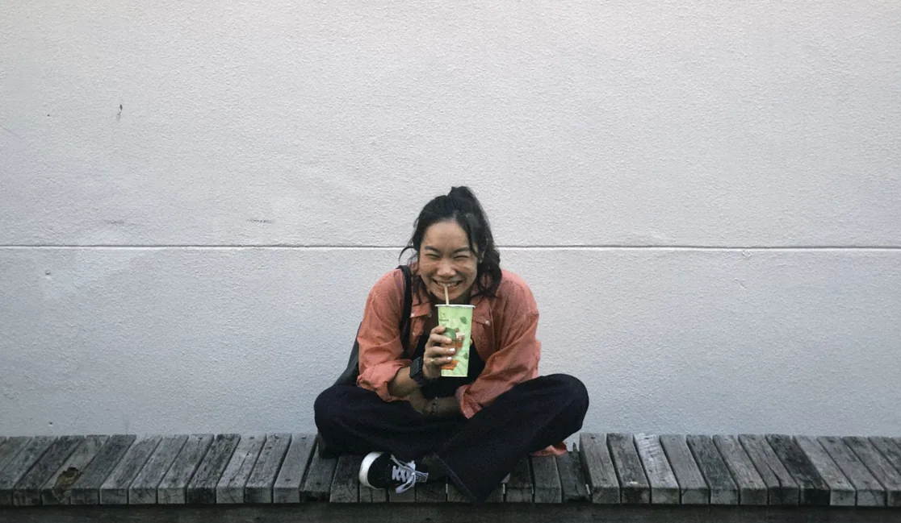

A product manager who turns problems into solutions.
I look closely at where people get stuck, make sense of the constraints, and help teams decide what to do next.

Hi, I’m Maggie. You can also call me Jiahui 嘉惠. I’m a Product Manager, and I’ve always been drawn to the moment when a fuzzy problem starts becoming something a team can see, discuss, and act on.
My path began in industrial design, moved through product design, and eventually grew into product ownership. Each chapter still shapes how I work today: I look closely at where people get stuck, then explore the systems, operational needs, and technical constraints behind the experience.
“Make the problem clear enough that the whole team can move.”
From understanding the experience to shaping the decision.
Across connected e-bike experiences and dealer service tools, I bring user needs, business context, and delivery realities together. I ask questions, map the experience, and make constraints visible so everyone can work from a shared understanding. On Flex, that meant deciding what belonged in the first release and what could wait.
I enjoy connecting perspectives across disciplines, weighing user value against dependencies and team capacity to find a practical way forward. And I care about what happens after launch: whether the product actually works in people’s hands, what the data tells us, and what deserves to improve next.
Industrial Designer
Understanding physical products and the realities of making them.
Product Designer
Connecting user needs with clear user flows and interactions.
Product Manager
Bringing product direction, team decisions, and delivery together.